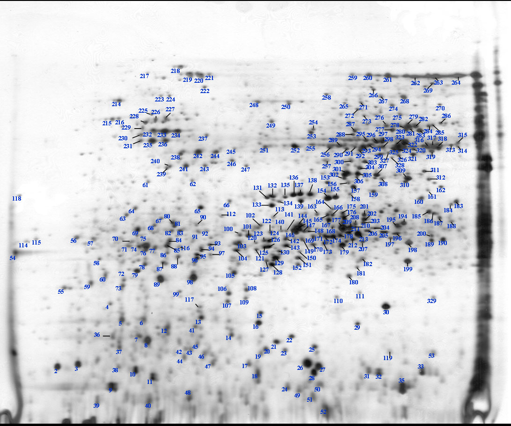
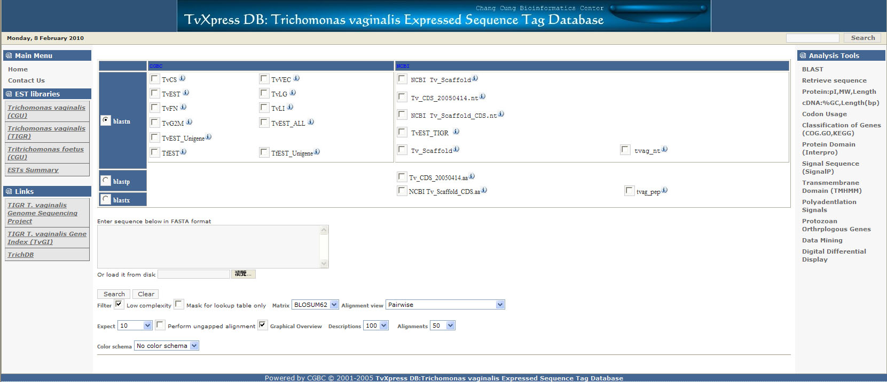

| T. vaginalis Whole Genome Sequencing Project | |
 |
We
published the T. vagianlis G3 genome in Science with Prof.
Jane Carlton of "The Institute of Genome Research" in
2007. "Repeats and transposable elements comprise about two-thirds of the ~160-megabase genome, reflecting a recent massive expansion of genetic material. This expansion, in conjunction with the shaping of metabolic pathways that likely transpired through lateral gene transfer from bacteria, and amplification of specific gene families implicated in pathogenesis and phagocytosis of host proteins may exemplify adaptations of the parasite during its transition to a urogenital environment. The genome sequence predicts previously unknown functions for the hydrogenosome......more. |
| Draft genome sequence of the sexually transmitted pathogen Trichomonas vaginalis. Science 315(5809):207-12. | |
| Reference Proteome | |
|
 |
We are using 2-dimensional gel electrophoresis/MALDI/TOLF and LC/MS/MS to establish the reference proteome and protein expression profiles of T. vaginalis, T. foetus and P. hominis as a basis for future comparative proteomics. The reference proteome was published in 2009. The T. foetus and P. hominis reference proteome will be finished in 2010. |
| Huang KY, Chien KY, Lin YC, Hsu WM, Fong IK, Huang PJ, Yueh YM, Gan RRC, Tang P. (2009) A Proteome Reference Map of Trichomonas vaginalis. Parasitol. Res. 104(4):927-933 | |
| Trichomonas Expressed Sequence Tag Database (TvXpress) | |
|
 |
For the interest of comparative transcriptomics, we generated and analysis 70,000 ESTs from different cDNA libraries which represent various stages of cell growth and pathogenesis from T. vaginalis, T. foetus and P. hominis. |
| TvXpress Database | |
| Protist microRNAomics | |
|
This is a three years research project
(2009-2011) supported by the National Science Council aimed to
elucidate the miRNA interaction network in T. vaginalis and
other protist. |
|
| Li SC, Tang P, Lin WC. (2007) Intronic microRNA: discovery and biological implications. DNA Cell Biol. 26(4):195-207. | |
| Lin WC, Li SC, Lin WC, Shin JW, Hu SN, Yu XM, Huang TY, Chen SC, Chen HC, Chen SJ, Huang PJ, Gan RRC, Chiu CH, Tang P (2009) Identification of microRNA in the protist Trichomonas vaginalis. Genomics 93: 487–493. | |
| Lin WC, Huang KY, Chen SC, Huang TY, Chen SJ, Huang PJ, Tang P*.(2009) Malate dehydrogenase is negatively regulated by miR-1 in Trichomonas vaginalis. Parasitol. Res. 105: 1683-1689. | |
| Huang PJ, Liu YC, Lee CC, Lin WC, Gan RRC ,Lyu PL, Tang P* (2010) DSAP: Deep-Sequencing Small RNA Analysis Pipeline. Nucleic Acids Res. Nucleic Acids Res. 38 Suppl:W385-91. | |
| Huang PJ, Lin WC, Chen SC, Lin YH, Sun CH, Lyu PC, Tang P*. (2012) Identification of putative miRNA from the deep-branching unicellular flagellates. Genomics 99(2):101-7. | |
| Systems Biology of Calorie- induced longevity in T. vagianlis | |
| Restriction of caloric intake (CR) is the only non-genetic intervention known to extend the longevity in organisms from yeast to mice and prevents age-dependent deterioration, without causing irreversible developmental or reproductive defects. Previous studies from yeast, worms, flies, and mammals support the idea that CR is not simply a passive effect but an active, highly conserved stress response that evolved early in life’s history to increase an organism’s chance of surviving adversity. Although many dozens of genes have been identified where mutation increases life span, and the molecular pathways and processes that determine the rate of aging are being revealed. The molecular pathways involved in the regulation of life-span are still unclear because of the complex biological organization and regulatory networks in muticellular organisms. We use the single-celled eukaryote T. vaginalis as a model system to study the longevity interactive network. | |